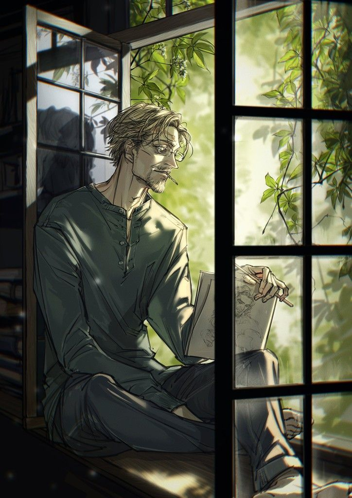
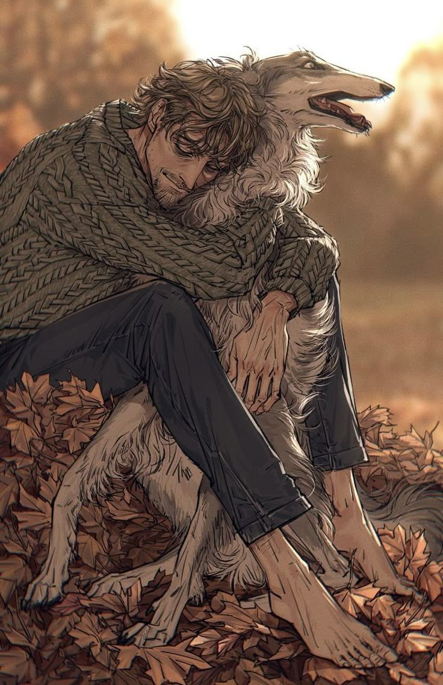

VINCENT N I G H T R A Y
L’apparence de Vincent avait cette manière singulière de frapper le regard, semblable à une plainte silencieuse poussée par un corps trop longtemps négligé. Il était maigre à en faire mal, la faim semblait avoir sculpté chaque contour de sa silhouette avec une précision impitoyable. Ses clavicules saillaient telles des ailes d’os prêtes à se rompre et, sous l’éclat pâle de sa peau, chaque arête, chaque jointure de son squelette se révélait sans pudeur.
Ses poignets, si fins qu’ils paraissaient fragiles comme du verre, vibraient au moindre geste, toujours au bord de céder sous une pression dérisoire. Il en allait de même pour ses chevilles, graciles et osseuses, soutenant de longues jambes droites dont l’équilibre paraissait perpétuellement précaire. Il n’était ni grand ni petit, tout juste légèrement au-dessus de la moyenne, mais son allure donnait l’étrange impression d’un être étiré par la douleur ou par l’absence, la vie semblait l’avoir allongé pour mieux l’effiler.
Son torse, sec et presque creux, laissait deviner le relief de ses abdominaux, non par l’effort ou l’exercice, mais par la simple disparition de tout ce qui aurait dû les masquer. Sa peau s’étendait sur lui tel un voile trop mince posé sur une structure devenue trop visible. Rien n’était illusion, tout sonnait vrai : il suffisait d’un regard pour comprendre qu’une simple prise au bras pourrait le plier, qu’il était un roseau privé de sa souplesse, un être que l’on aurait cru capable de se rompre sans un cri.

Et puis, il y avait son visage, cet étrange mélange de beauté fanée et de jeunesse éteinte. Les lignes de son crâne en dessinaient les contours avec une netteté troubalnte. Ses yeux, souvent baissés, portaient des cernes creusés en profonds sillons par une fatigue ancienne. Jamais elles ne le quittaient, ces ombres sous ses paupières, véritables cicatrices du sommeil perdu et d’un passé devenu trop lourd à porter. Elles lui donnaient l’allure d’un homme plus vieux que son âge véritable, victime d’années qui semblaient s’être abattues sur lui avec toute la violence que le temps réserve parfois aux âmes oubliées. Quelque chose d’invisible l’avait usé. Ni le travail ni les années, mais une érosion intérieure. Vincent paraissait hors du temps, hors de l’époque, présence égarée dans un univers qui ne l’avait jamais attendu. Un fantôme enfermé dans un corps persistant à vivre davantage par habitude que par véritable volonté.
Son nez, droit et fin, portait sur son arête une petite bosse, à peine marquée, mais suffisante pour rompre la symétrie de ses traits. Ce défaut, loin de nuire à sa beauté pourtant bien cachée, lui conférait une singularité discrète, une nuance d’humanité dans une figure autrement trop lisse. C’était le genre d’imperfection qui attirait le regard, non pour choquer, mais pour intriguer, une irrégularité presque charmante, une signature que le hasard aurait déposée là avant de poursuivre son chemin.
Ses yeux, eux, demeuraient presque toujours à moitié clos, alourdis par le poids de l’existence. Un voile permanent habitait son regard, dépassant largement la simple fatigue physique : une lassitude plus profonde, presque morale, teintait son expression d’une douce mélancolie. Pourtant, au creux de ces paupières fatiguées, ses iris brillaient d’un bleu étonnamment pâle, si clair qu’il en paraissait irréel. On aurait dit qu’ils avaient autrefois capturé un fragment de ciel pour n’en conserver, avec les années, que l’éclat dépouillé de toute chaleur. Une couleur rare, délicate, éphémère.
Ses lèvres, fines et peu mobiles, peinaient à trahir ce qu’il ressentait. Trop timides pour exprimer pleinement la joie, trop closes pour laisser s’échapper la peine, elles participaient à cette étrange retenue de ses traits. L’émotion elle-même semblait avoir oublié le chemin de son visage. Vincent, quant à lui, n’en avait peut-être même pas conscience, son propre reflet lui échappait depuis trop longtemps pour qu’il songe encore à l’interroger.
Mais ce qui frappait chez lui, ce qui ne laissait aucun doute sur son étrangeté, c’étaient ses mains, ou plus précisément ses doigts. Longs, presque effilés, ils donnaient une impression trompeuse de dextérité. Ils auraient pu appartenir à un pianiste ou à un peintre, tant leur forme évoquait la délicatesse et la précision. Et pourtant... une observation plus attentive révélait la vérité : ces doigts tremblaient. Parfois imperceptiblement, parfois avec une évidence impossible à ignorer, mais toujours selon cette irrégularité dérangeante d’une corde maintenue trop longtemps sous tension. Il n’était pas rare de le voir peiner à saisir un verre, ses gestes devenant soudain maladroits, presque enfantins dans leur lutte contre le manque.
Car Vincent vivait sous l’emprise. Non celle d’une personne, mais d’un besoin plus insidieux : celui des substances. Il ne connaissait de véritable répit que dans l’oubli chimique et, sitôt celui-ci dissipé, le manque revenait réclamer son dû. Son corps, trop habitué à la fuite, exigeait sans fin ce qu’on lui avait appris à désirer.
Ses cheveux, d’un blond terne, portaient eux aussi les traces de l’abandon. Jamais véritablement coiffés, coupés à la va-vite par ses propres soins, ils retombaient en mèches emmêlées, parfois grasses, souvent désordonnées. Curieusement, cette négligence ne jouait pas contre lui, elle s’accordait au contraire à son allure générale. Tout son être semblait avoir adopté cette forme de désinvolture, cette manière de demeurer en marge du monde sans jamais prendre la peine de le fuir complètement.
Une seule partie de son apparence paraissait bénéficier d’un soin relatif : la fine pilosité couvrant son menton. Il portait un bouc, ni véritablement entretenu ni complètement négligé. Un entre-deux incertain, à l’image de tout son être. Trop propre pour témoigner d’une indifférence totale, trop imprécis pour révéler un véritable souci de paraître. Peut-être était-ce une tentative de contrôle, un vestige d’orgueil ou simplement le dernier geste d’apparence subsistant dans une vie où tout semblait se déliter peu à peu.

Le torse de Vincent racontait une histoire silencieuse, gravée à même la peau. Une constellation de cicatrices, éparses et profondes, zébrait son haut du corps. Certaines étaient larges et anciennes, d’autres plus fines, plus récentes, mais toutes paraissaient avoir été abandonnées à elles-mêmes. Rien, dans leur aspect rugueux ou leur relief marqué, ne suggérait qu’elles aient un jour reçu le moindre soin. Elles demeuraient là, traces brutes d’un monde ayant déchiré sa peau sans jamais prendre la peine de la recoudre.
Sur l’intérieur de ses avant-bras s’étendaient d’autres marques, plus régulières, plus nettes. Des lignes presque symétriques, tracées selon un rituel douloureux dont la répétition se devinait aisément. Leur disposition ne trompait guère : le bras droit en portait davantage, suggérant que la main gauche les avait dessinées. Dans le creux de ses coudes apparaissaient encore d’autres stigmates. Plus petits, mais plus éloquents. Des marques de piqûres, certaines refermées, d’autres encore à vif ou régulièrement rouvertes. La trace évidente du passage répété d’une seringue, encore et encore, jusqu’à ce que la peau elle-même semble avoir oublié la manière de guérir correctement.
Ses vêtements, quant à eux, reflétaient le même abandon : jamais tout à fait propres, rarement lavés, souvent oubliés. Pourtant, ils n’exhalaient pas la puanteur à laquelle on aurait pu s’attendre. Vincent bougeait peu. Il vivait en retrait, presque immobile, enfermé dans sa propre boutique, cette prison végétale qu’il avait choisie pour refuge. Dans cet étrange cocon, son corps transpirait peu et finissait davantage par emprunter l’odeur des lieux qu’il habitait : un mélange de terre humide, de pétales fanés et d’engrais. Plus puissant encore persistait le parfum entêtant du tabac, omniprésent, mêlé à d’autres effluves herbacés, plus âcres, reconnaissables aux nez avertis.
Il ne portait presque que des chemises, vieilles étoffes aux couleurs passées, souvent beaucoup trop larges pour lui. Jamais boutonnées jusqu’en haut, parfois même mal fermées, leurs pans asymétriques s’écartaient en un rideau désajusté et dévoilaient la peau nue en dessous. Il ne mettait rien sous celles-ci, ni T-shirt ni débardeur, une couche supplémentaire aurait presque paru superflue dans une existence déjà trop chargée de poids autrement plus lourds.
Quant à ses pieds, ils subissaient le même abandon que le reste. Rarement couverts de chaussettes, ils flottaient dans des Crocs de jardin ou dans des chaussons à moitié troués, dont le tissu brûlé trahissait les cendres de cigarettes tombées là sans qu’il y prête la moindre attention. Ses pantalons portaient eux aussi les stigmates de cette négligence : usés, effilochés, troués aux genoux ou marqués aux endroits où le feu avait laissé son empreinte.